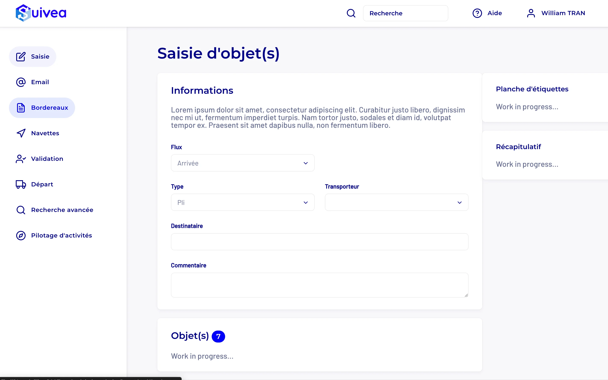
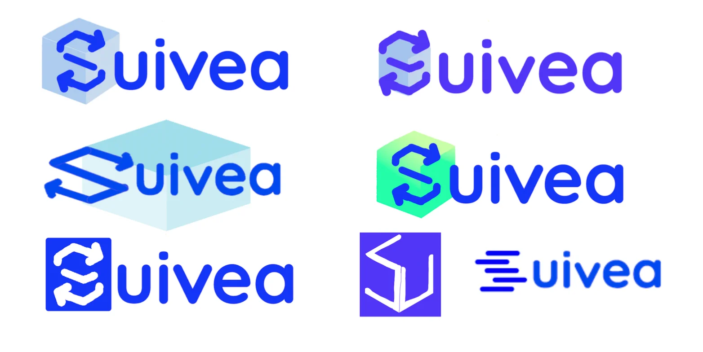

Refonte Suivea - logo & interface mobile
Refonte du logo et des maquettes mobiles Suivea pour clarifier l'interface, renforcer la cohérence visuelle et préparer une intégration front-end plus propre.
Résumé du projet
Pendant mon stage de 2e année MMI chez Docaposte, j'ai travaillé sur Suivea, un outil de traçabilité des flux courrier/colis. La mission couvrait deux volets complémentaires : refondre l'identité visuelle (logo) et moderniser l'interface mobile.
L'objectif n'était pas de moderniser pour moderniser, mais de corriger une interface dense et une identité visuelle vieillissante, tout en conservant les repères nécessaires pour des utilisateurs déjà familiers de l'outil.
Contexte produit
Suivea est utilisé dans un environnement métier avec des usages terrain (courrier, navettes, suivi d'objets) sur plusieurs terminaux : PC, mobile, tablette et smartphone Android. Le redesign devait rester clair, robuste et conforme à la charte interne de l'entreprise.
- Conserver la lisibilité dans des contextes d'usage rapides
- Renforcer la cohérence entre identité visuelle et interface produit
- Proposer des maquettes exploitables directement pour l'intégration front-end
Constat de départ
L'existant remplissait sa fonction, mais l'ensemble manquait d'unité. L'interface donnait une impression plus datée et plus dense que nécessaire, avec des écarts de hiérarchie visuelle, de respiration et de cohérence entre les écrans.
Le travail de refonte devait donc améliorer la lisibilité sans casser les habitudes d'usage, ce qui demandait plus de précision que de rupture.

Mission 1 - Refonte du logo
J'ai repris le logo existant avec une direction plus nette, plus lisible et plus stable à petite taille, en conservant les codes déjà associés au produit : formes simples, lecture immédiate et tonalité bleue. Le but n'était pas de changer l'identité, mais de la rendre plus juste et plus cohérente avec la refonte UI.
- Exploration de plusieurs pistes pour tester équilibre, simplicité et lisibilité
- Vérification de la tenue du logo en petit format et dans des contextes d'usage variés
- Conservation des repères de marque utiles pour éviter une rupture trop brutale
- Sélection de la version finale après itérations et retours de l'équipe

Mission 2 - Refonte de l'interface mobile
J'ai ensuite refondu les maquettes de l'application mobile Android, en retravaillant la hiérarchie visuelle, l'espacement des blocs et la cohérence entre écrans. La page de saisie a servi de base de référence pour harmoniser le reste du parcours utilisateur.
- Refonte de la navigation (navbar / footbar) pour clarifier les actions prioritaires
- Réorganisation des écrans de saisie et de distribution pour réduire la charge visuelle
- Uniformisation des composants, icônes, espacements et libellés
- Production de maquettes plus directement exploitables pour l'intégration
Critères de design
- Mettre en avant les actions principales sans surcharger l'écran
- Améliorer la lecture rapide dans un contexte d'usage terrain
- Créer des écrans suffisamment cohérents pour former un vrai système, pas une suite de pages isolées
- Produire un niveau de précision compatible avec une intégration front-end fidèle

Méthode de travail
Le projet avançait en itérations courtes avec des retours réguliers du maître de stage et de l'équipe produit. Cette boucle de feedback a permis d'ajuster rapidement les choix graphiques, de renforcer la cohérence entre écrans et d'aligner le design avec les besoins métier.
Difficultés & arbitrages
- Trouver le bon équilibre entre modernisation et continuité visuelle
- Maintenir une lisibilité forte sur des écrans mobiles parfois très denses
- Faire converger les retours de plusieurs interlocuteurs sans perdre la cohérence d'ensemble
L'arbitrage principal consistait à simplifier et clarifier sans "designer contre l'usage". Dans un outil métier, une interface plus propre n'est utile que si elle reste immédiatement compréhensible pour les personnes qui l'utilisent au quotidien.
Résultats
- Logo final retenu comme base d'identité du projet Suivea
- Maquettes mobiles validées et exploitables pour l'intégration
- Système visuel plus homogène pour les prochaines évolutions produit
- Base plus claire pour enchaîner sur la phase d'intégration front-end
Ce que ce projet m’a permis de développer
- Capacité à refondre sans casser les repères utiles d'un produit existant
- Attention à la lisibilité et à la hiérarchie dans un contexte métier dense
- Capacité à produire des maquettes pensées aussi pour leur future intégration
- Compréhension du lien entre identité visuelle, interface et usage réel
Projet lié (développement)
Pour la partie intégration front-end réalisée en binôme pendant ce même stage :
Voir le projet développement Suivea v3